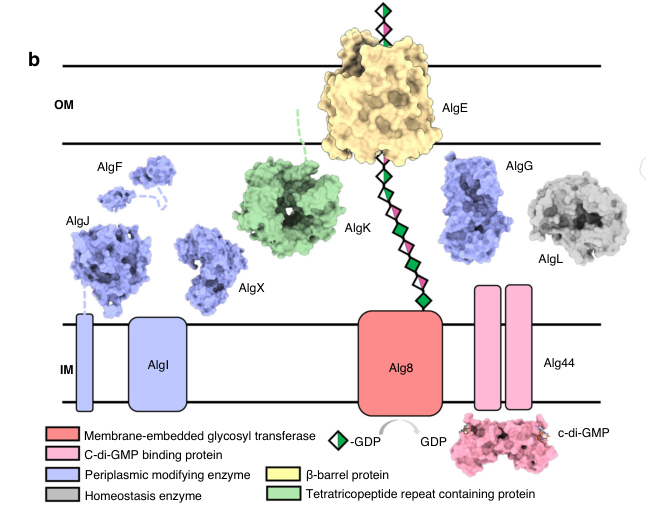

algE encodes an outer-membrane AlgE-family alginate export protein in Pseudomonas putida KT2440. It likely forms the alginate permeability pore at the outer-membrane step of alginate polymer export.
Definition: Enables passage of alginate polymer through a membrane channel or pore.
Justification: AlgE is described by similarity as having channel-forming properties and probably functioning as an alginate permeability pore, but the GOA rows capture only outer-membrane localization and alginate biosynthesis process, not the pore activity itself.
Parent term: channel activity
Supporting Evidence:
| GO Term | Evidence | Action | Reason |
|---|---|---|---|
|
GO:0009279
cell outer membrane
|
IEA
GO_REF:0000044 |
ACCEPT |
Summary: algE is correctly localized to the cell outer membrane.
Reason: AlgE functions as an outer-membrane alginate pore, so the outer-membrane location is intrinsic to the core channel role. Falcon supports this from AlgE homolog structures and a modeled P. putida AlgE-containing AlgEKX complex, but direct Q88NC8/PP_1284 KT2440 biochemical evidence was not recovered.
Supporting Evidence:
file:PSEPK/algE/algE-uniprot.txt
SUBCELLULAR LOCATION: Cell outer membrane
file:PSEPK/algE/algE-goa.tsv
GO:0009279 cell outer membrane
file:PSEPK/algE/algE-deep-research-falcon.md
Characterized Pseudomonas AlgE homologs are outer-membrane 18-stranded beta-barrel alginate export porins, and a 2022 AlgEKX model includes P. putida AlgE.
|
|
GO:0042121
alginic acid biosynthetic process
|
IEA
GO_REF:0000041 |
ACCEPT |
Summary: AlgE is part of alginate biosynthesis/export and should retain the alginic acid biosynthetic process annotation.
Reason: UniProt places AlgE in alginate biosynthesis and describes it as probably functioning as an alginate permeability pore, consistent with a core pathway role in producing/exporting alginate polymer. Falcon supports AlgE as the outer-membrane translocation route in the envelope-spanning alginate secretion apparatus, but the evidence is homolog/ortholog based for Q88NC8.
Supporting Evidence:
file:PSEPK/algE/algE-uniprot.txt
Has non-porin-like, channel-forming properties and probably functions as an alginate permeability pore
file:PSEPK/algE/algE-uniprot.txt
PATHWAY: Glycan biosynthesis; alginate biosynthesis
file:PSEPK/algE/algE-goa.tsv
GO:0042121 alginic acid biosynthetic process
file:PSEPK/algE/algE-deep-research-falcon.md
AlgE-family studies place AlgE downstream of Alg8/Alg44 polymerization and AlgK/AlgX-associated periplasmic export/modification, providing the outer-membrane channel for alginate secretion.
|
Q: Does KT2440 AlgE form an alginate-specific outer-membrane pore with substrate selectivity comparable to characterized AlgE homologs?
Experiment: Reconstitute AlgE in proteoliposomes or planar bilayers and test alginate-dependent channel conductance and polymer passage.
Type: membrane channel assay
The research report should be a detailed narrative explaining the function, biological processes, and localization of the gene product. Citations should be given for all claims.
You should prioritize authoritative reviews and primary scientific literature when conducting research. You can supplement
this with annotations you find in gene/protein databases, but these can be outdated or inaccurate.
We are specifically interested in the primary function of the gene - for enzymes, what reaction is catalyzed, and what is the substrate specificity? For transporters, what is the substrate? For structural proteins or adapters, what is the broader structural role? For signaling molecules, what is the role in the pathway.
We are interested in where in or outside the cell the gene product carries out its function.
We are also interested in the signaling or biochemical pathways in which the gene functions. We are less interested in broad pleiotropic effects, except where these elucidate the precise role.
Include evidence where possible. We are interested in both experimental evidence as well as inference from structure, evolution, or bioinformatic analysis. Precise studies should be prioritized over high-throughput, where available.
The UniProt target (Q88NC8; gene algE; locus PP_1284) is annotated as an AlgE-family “alginate production protein AlgE” precursor from Pseudomonas putida KT2440. In the experimental literature, AlgE is best characterized in Pseudomonas aeruginosa as a substrate-selective, 18-stranded β-barrel outer-membrane porin that provides the outer-membrane translocation route for the polyanionic polysaccharide alginate. Multiple structural and functional studies support a charge-complementarity mechanism, dual-gate control by extracellular loop L2 and periplasmic loop T8, and incorporation into an envelope-spanning secretion/modification complex with AlgK and AlgX. A recent high-impact structural study explicitly models a P. putida AlgE ortholog (AlgE_Pp) within the AlgEKX complex, supporting the interpretation that P. putida Q88NC8 encodes the analogous outer-membrane alginate export porin, although accession-level mapping (Q88NC8/PP_1284) is not explicitly stated in the retrieved papers and remains an inference from orthology/family/domain consistency. (gheorghita2022structureofthe pages 6-8, gheorghita2023pseudomonasaeruginosabiofilm pages 10-12, whitney2011structuralbasisfor pages 1-3)
Verified concept-level identity: “algE” in Pseudomonas alginate systems refers to the outer-membrane alginate export porin AlgE, not to unrelated genes in other organisms. The defining evidence is the solved β-barrel structures and secretion phenotypes in P. aeruginosa and cross-species modeling of P. putida AlgE within the same export apparatus. (gheorghita2023pseudomonasaeruginosabiofilm pages 10-12, gheorghita2022structureofthe pages 6-8, whitney2011structuralbasisfor pages 1-3)
Remaining ambiguity (accession-level): none of the retrieved papers explicitly cite UniProt Q88NC8 or PP_1284; therefore, statements about Q88NC8 specifically are based on the AlgE family function and on a paper that explicitly models P. putida AlgE in the AlgEKX complex. (gheorghita2022structureofthe pages 6-8)
Alginate is an anionic exopolysaccharide (EPS) secreted by some Gram-negative bacteria (notably Pseudomonas), and its export requires a specialized multi-protein system spanning the cell envelope. Alginate secretion is a key biofilm-associated function in Pseudomonas and is closely tied to envelope-spanning biosynthetic complexes. (gheorghita2023pseudomonasaeruginosabiofilm pages 10-12, gheorghita2023pseudomonasaeruginosabiofilm pages 4-5)
Definition: AlgE is an outer-membrane (OM) β-barrel porin that forms the outer-membrane channel for alginate export. The canonical structural model is a monomeric 18-stranded antiparallel β-barrel with an electropositive pore suited to translocate a polyanionic polymer. (whitney2011structuralbasisfor pages 1-3)
Key structural features:
- Electropositive lumen/constriction with conserved basic residues that likely confer specificity for alginate. (whitney2011structuralbasisfor pages 1-3)
- Two gating loops that occlude the channel in “closed” conformations:
- L2 (extracellular gate)
- T8 (periplasmic gate)
These loops are central to the modern “double-gate” model of AlgE-mediated secretion. (tan2014aconformationallandscape pages 7-8, whitney2011structuralbasisfor pages 1-3)
Alginate secretion is part of a broader class of “synthase-dependent” secretion systems in Gram-negative bacteria: a cytoplasmic-membrane (inner membrane) polymerase produces the polymer while a periplasm/outer-membrane apparatus protects, modifies, and exports it. (whitney2013synthasedependentexopolysaccharidesecretion pages 3-4)
Functional role: AlgE is required for secretion of intact alginate polymer across the outer membrane; loss-of-function leads to failure of polymer export with release of degradation products (free uronic acids) rather than intact polymer. (rehman2013dualrolesof pages 1-5, hay2010membranetopologyof pages 1-2)
Substrate specificity and physicochemical basis:
- The AlgE pore is an electropositive conduit tailored for an anionic substrate, with a narrow constriction (~8 Å in one structural analysis). (whitney2011structuralbasisfor pages 1-3)
- Alginate-related substrate analogs affect channel function: in liposome-reconstitution experiments, excess di-mannuronic acid (MM) reduced iodide efflux to near background, supporting ligand recognition/selectivity rather than a nonspecific porin function. (whitney2011structuralbasisfor pages 3-4)
- A structural ensemble study identified a ~10 Å electropositive pore and a bound citrate proposed to mimic uronate units, mapping residues (e.g., Lys47, Arg74, Arg353, Arg459) positioned to recognize polyanionic uronates. (tan2014aconformationallandscape pages 7-8)
Structural data support an AlgE “double-gate” model:
- L2 can block the pore from the extracellular side, and is variably ordered/disordered among crystal structures. (tan2014aconformationallandscape pages 7-8, whitney2011structuralbasisfor pages 1-3)
- T8 occludes the constriction on the periplasmic side and is implicated as a major conductance regulator; removal of T8 increased halide conductance. (whitney2011structuralbasisfor pages 1-3)
Quantitative functional evidence:
- ΔT8 produced an approximately threefold increase in iodide efflux in a reconstituted system, strongly supporting T8 as a gate. (whitney2011structuralbasisfor pages 1-3)
- In vivo complementation results reported partial restoration of secretion with loop deletions: AlgEΔT8 ~48% and AlgEΔL2 ~60% of wild-type alginate production (in the reported system), consistent with loops having regulatory/structural roles while the barrel remains functional. (whitney2011structuralbasisfor pages 3-4)
AlgE is an outer-membrane channel protein; topology/structure place both termini on the periplasmic side, with multiple extracellular loops and periplasmic turns. (tan2014aconformationallandscape pages 7-8, hay2010membranetopologyof pages 1-2)
A contemporary mechanistic model is that alginate synthesis, periplasmic modification, and OM export are coordinated by a trans-envelope multiprotein factory. (gheorghita2023pseudomonasaeruginosabiofilm pages 10-12, gheorghita2023pseudomonasaeruginosabiofilm pages 4-5)
Upstream polymerization/regulation (inner membrane):
- Alg8 acts as the polymerase and Alg44 (PilZ domain) couples c-di-GMP signaling to activation of polymerization; polymer is translocated into the periplasm after synthesis. (gheorghita2023pseudomonasaeruginosabiofilm pages 4-5)
Periplasmic modification and protection:
- AlgI/AlgJ/AlgF with AlgX participate in O-acetylation; AlgL is a lyase that can degrade aberrant polymer. (gheorghita2023pseudomonasaeruginosabiofilm pages 4-5)
- Export failure (e.g., deleting algX/algK in some systems) results in secretion of small degradation products, supporting that a correctly assembled trans-envelope complex prevents periplasmic degradation and enables successful export. (gheorghita2023pseudomonasaeruginosabiofilm pages 4-5)
Outer membrane export complex:
- A 2023 authoritative review synthesizes structural and genetic evidence that AlgE’s T8 gate is likely controlled in the secretion context and proposes interaction with the TPR-containing periplasmic lipoprotein AlgK; this interaction is proposed to facilitate opening for export. (gheorghita2023pseudomonasaeruginosabiofilm pages 10-12)
- A 2013 mutational/phenotypic study supports a “dual role” for AlgE: secretion pore and a stabilizing/scaffold component in a multiprotein secretion complex, because deletion of algE destabilized AlgK and AlgX and reduced Alg44 copy number; chromosomal complementation restored these components. (rehman2013dualrolesof pages 1-5)
A 2023 review in FEMS Microbiology Reviews highlights major advances in understanding Pseudomonas EPS secretion systems, emphasizing that AlgE is an 18-stranded OM β-barrel with an electropositive constriction and that L2/T8 gating and AlgK-associated opening are central to the prevailing model. It also synthesizes modeling/simulation results suggesting AlgE itself does not supply directionality/energy for transport; instead, energy is thought to come primarily from inner-membrane polymerization while AlgE “breathing” may facilitate passage. (gheorghita2023pseudomonasaeruginosabiofilm pages 10-12)
Publication details: Gheorghita et al., 2023-10 (Oct 2023), https://doi.org/10.1093/femsre/fuad060 (gheorghita2023pseudomonasaeruginosabiofilm pages 10-12)
Although not directly measuring AlgE function, a 2024 fermentation-focused engineering study in P. putida created an engineered strain with deletion of an alginate-pathway gene (algA) along with motility/pili genes to reduce biofilm formation (useful in fermentation operations). The triple mutant showed significant biofilm reduction (e.g., ~40% lower biofilm after 72 h) while maintaining similar growth kinetics, illustrating real-world value in tuning alginate-associated phenotypes for bioprocessing. (frolov2024constructionofthe pages 5-8)
Publication details: Frolov et al., 2024-11 (Nov 2024), https://doi.org/10.3390/fermentation10120606 (frolov2024constructionofthe pages 5-8)
A 2022 Nature Communications study provides a detailed structural framework for the AlgKX complex and a modeled AlgEKX outer-membrane modification/secretion assembly. Importantly for your target, it explicitly includes structural modeling of Pseudomonas putida AlgE (AlgE_Pp) and uses this to build a plausible model for the periplasm-to-exterior export trajectory, including an electropositive pore pathway. (gheorghita2022structureofthe pages 6-8)
Publication details: Gheorghita et al., 2022-12 (Dec 2022), https://doi.org/10.1038/s41467-022-35131-6 (gheorghita2022structureofthe pages 6-8)
Biofilm formation is a practical limitation in bioreactors (fouling, mass transfer issues, foam). Engineering P. putida strains with reduced alginate-associated biofilm capability can improve fermentation handling. In the 2024 study, the engineered strain maintained OD_600 while reducing biofilm by 20–30% at 24 h and up to 40% at 72 h, supporting utility for fermentation operations. (frolov2024constructionofthe pages 5-8)
Work in nonpathogenic Pseudomonas fluorescens has practical relevance for microbial production: AlgE can be visualized by immunogold TEM as part of clustered surface “factories,” and AlgE localization depends on other scaffold proteins. The number of detectable factories did not correlate simply with alginate production, suggesting that precursor supply and cellular physiology can be more limiting than exporter abundance. These insights are directly relevant to strategies that aim to engineer efficient microbial alginate production processes. (maleki2016alginatebiosynthesisfactories pages 1-5, maleki2017newinsightsinto pages 1-2)
The strongest authoritative synthesis in the retrieved set (Gheorghita et al., 2023, FEMS Microbiology Reviews) treats AlgE as a canonical outer-membrane β-barrel porin specialized for alginate export, and emphasizes a model in which export is achieved by an envelope-spanning multiprotein system with AlgK and AlgX coordinating modification/export and AlgE providing the outer-membrane translocation conduit. (gheorghita2023pseudomonasaeruginosabiofilm pages 10-12)
By family/domain definition and by orthology to experimentally characterized AlgE proteins, Q88NC8 is best annotated as an outer-membrane β-barrel export porin, likely with a periplasm-facing interface for interaction with periplasmic scaffold/modification factors. (gheorghita2022structureofthe pages 6-8, whitney2011structuralbasisfor pages 1-3)
AlgE functions at the final outer-membrane step of alginate secretion, downstream of:
- Inner-membrane polymerization (Alg8/Alg44) (gheorghita2023pseudomonasaeruginosabiofilm pages 4-5)
- Periplasmic modification (AlgI/J/F/X) and processing control (AlgL) (gheorghita2023pseudomonasaeruginosabiofilm pages 4-5)
- Periplasmic/export-scaffold interactions (AlgK, AlgKX/AlgEKX assemblies) (gheorghita2023pseudomonasaeruginosabiofilm pages 10-12, gheorghita2022structureofthe pages 6-8)
The following figures provide visual support for the modern mechanistic model of alginate secretion and the proposed AlgEKX outer-membrane complex trajectory:
- Pathway schematic highlighting AlgX/AlgK/AlgE and their placement in the secretion system. (gheorghita2022structureofthe media 4c188b91)
- Structural model/electrostatic surface of AlgEKX with a proposed polymer export trajectory across the OM. (gheorghita2022structureofthe media a87fea0f, gheorghita2022structureofthe media b92364ee)
References
(gheorghita2022structureofthe pages 6-8): Andreea A. Gheorghita, Yancheng E. Li, Elena N. Kitova, Duong T. Bui, Roland Pfoh, Kristin E. Low, Gregory B. Whitfield, Marthe T. C. Walvoort, Qingju Zhang, Jeroen D. C. Codée, John S. Klassen, and P. Lynne Howell. Structure of the algkx modification and secretion complex required for alginate production and biofilm attachment in pseudomonas aeruginosa. Nature Communications, Dec 2022. URL: https://doi.org/10.1038/s41467-022-35131-6, doi:10.1038/s41467-022-35131-6. This article has 37 citations and is from a highest quality peer-reviewed journal.
(gheorghita2023pseudomonasaeruginosabiofilm pages 10-12): Andreea A Gheorghita, Daniel J Wozniak, Matthew R Parsek, and P Lynne Howell. Pseudomonas aeruginosa biofilm exopolysaccharides: assembly, function, and degradation. FEMS microbiology reviews, Oct 2023. URL: https://doi.org/10.1093/femsre/fuad060, doi:10.1093/femsre/fuad060. This article has 89 citations and is from a domain leading peer-reviewed journal.
(whitney2011structuralbasisfor pages 1-3): John C. Whitney, Iain D. Hay, Canhui Li, Paul D. W. Eckford, Howard Robinson, Maria F. Amaya, Lynn F. Wood, Dennis E. Ohman, Christine E. Bear, Bernd H. Rehm, and P. Lynne Howell. Structural basis for alginate secretion across the bacterial outer membrane. Proceedings of the National Academy of Sciences, 108:13083-13088, Jul 2011. URL: https://doi.org/10.1073/pnas.1104984108, doi:10.1073/pnas.1104984108. This article has 126 citations and is from a highest quality peer-reviewed journal.
(gheorghita2023pseudomonasaeruginosabiofilm pages 4-5): Andreea A Gheorghita, Daniel J Wozniak, Matthew R Parsek, and P Lynne Howell. Pseudomonas aeruginosa biofilm exopolysaccharides: assembly, function, and degradation. FEMS microbiology reviews, Oct 2023. URL: https://doi.org/10.1093/femsre/fuad060, doi:10.1093/femsre/fuad060. This article has 89 citations and is from a domain leading peer-reviewed journal.
(tan2014aconformationallandscape pages 7-8): Jingquan Tan, Sarah L. Rouse, Dianfan Li, Valerie E. Pye, Lutz Vogeley, Alette R. Brinth, Toufic El Arnaout, John C. Whitney, P. Lynne Howell, Mark S. P. Sansom, and Martin Caffrey. A conformational landscape for alginate secretion across the outer membrane ofpseudomonas aeruginosa. Acta Crystallographica Section D Biological Crystallography, 70:2054-2068, Jul 2014. URL: https://doi.org/10.1107/s1399004714001850, doi:10.1107/s1399004714001850. This article has 63 citations.
(whitney2013synthasedependentexopolysaccharidesecretion pages 3-4): J.C. Whitney and P.L. Howell. Synthase-dependent exopolysaccharide secretion in gram-negative bacteria. Trends in microbiology, 21 2:63-72, Feb 2013. URL: https://doi.org/10.1016/j.tim.2012.10.001, doi:10.1016/j.tim.2012.10.001. This article has 313 citations and is from a domain leading peer-reviewed journal.
(rehman2013dualrolesof pages 1-5): Zahid U. Rehman and Bernd H. A. Rehm. Dual roles of pseudomonas aeruginosa alge in secretion of the virulence factor alginate and formation of the secretion complex. Applied and Environmental Microbiology, 79:2002-2011, Mar 2013. URL: https://doi.org/10.1128/aem.03960-12, doi:10.1128/aem.03960-12. This article has 35 citations and is from a peer-reviewed journal.
(hay2010membranetopologyof pages 1-2): Iain D. Hay, Zahid U. Rehman, and Bernd H. A. Rehm. Membrane topology of outer membrane protein alge, which is required for alginate production in pseudomonas aeruginosa. Mar 2010. URL: https://doi.org/10.1128/aem.02945-09, doi:10.1128/aem.02945-09. This article has 53 citations and is from a peer-reviewed journal.
(whitney2011structuralbasisfor pages 3-4): John C. Whitney, Iain D. Hay, Canhui Li, Paul D. W. Eckford, Howard Robinson, Maria F. Amaya, Lynn F. Wood, Dennis E. Ohman, Christine E. Bear, Bernd H. Rehm, and P. Lynne Howell. Structural basis for alginate secretion across the bacterial outer membrane. Proceedings of the National Academy of Sciences, 108:13083-13088, Jul 2011. URL: https://doi.org/10.1073/pnas.1104984108, doi:10.1073/pnas.1104984108. This article has 126 citations and is from a highest quality peer-reviewed journal.
(frolov2024constructionofthe pages 5-8): Mikhail Frolov, Galim Alimzhanovich Kungurov, Emil Elmirovich Valiakhmetov, Artur Sergeyevich Gogov, Natalia Viktorovna Trachtmann, and Shamil Zavdatovich Validov. Construction of the pseudomonas putida strain with low motility and reduced biofilm formation for application in fermentation. Fermentation, 10:606, Nov 2024. URL: https://doi.org/10.3390/fermentation10120606, doi:10.3390/fermentation10120606. This article has 2 citations.
(maleki2016alginatebiosynthesisfactories pages 1-5): Susan Maleki, Eivind Almaas, Sergey Zotchev, Svein Valla, and Helga Ertesvåg. Alginate biosynthesis factories in pseudomonas fluorescens: localization and correlation with alginate production level. Applied and Environmental Microbiology, 82:1227-1236, Feb 2016. URL: https://doi.org/10.1128/aem.03114-15, doi:10.1128/aem.03114-15. This article has 53 citations and is from a peer-reviewed journal.
(maleki2017newinsightsinto pages 1-2): Susan Maleki, Mali Mærk, Radka Hrudikova, Svein Valla, and Helga Ertesvåg. New insights into pseudomonas fluorescens alginate biosynthesis relevant for the establishment of an efficient production process for microbial alginates. New biotechnology, 37 Pt A:2-8, Jul 2017. URL: https://doi.org/10.1016/j.nbt.2016.08.005, doi:10.1016/j.nbt.2016.08.005. This article has 31 citations and is from a peer-reviewed journal.
(whitney2011structuralbasisfor pages 4-5): John C. Whitney, Iain D. Hay, Canhui Li, Paul D. W. Eckford, Howard Robinson, Maria F. Amaya, Lynn F. Wood, Dennis E. Ohman, Christine E. Bear, Bernd H. Rehm, and P. Lynne Howell. Structural basis for alginate secretion across the bacterial outer membrane. Proceedings of the National Academy of Sciences, 108:13083-13088, Jul 2011. URL: https://doi.org/10.1073/pnas.1104984108, doi:10.1073/pnas.1104984108. This article has 126 citations and is from a highest quality peer-reviewed journal.
(gheorghita2022structureofthe media 4c188b91): Andreea A. Gheorghita, Yancheng E. Li, Elena N. Kitova, Duong T. Bui, Roland Pfoh, Kristin E. Low, Gregory B. Whitfield, Marthe T. C. Walvoort, Qingju Zhang, Jeroen D. C. Codée, John S. Klassen, and P. Lynne Howell. Structure of the algkx modification and secretion complex required for alginate production and biofilm attachment in pseudomonas aeruginosa. Nature Communications, Dec 2022. URL: https://doi.org/10.1038/s41467-022-35131-6, doi:10.1038/s41467-022-35131-6. This article has 37 citations and is from a highest quality peer-reviewed journal.
(gheorghita2022structureofthe media a87fea0f): Andreea A. Gheorghita, Yancheng E. Li, Elena N. Kitova, Duong T. Bui, Roland Pfoh, Kristin E. Low, Gregory B. Whitfield, Marthe T. C. Walvoort, Qingju Zhang, Jeroen D. C. Codée, John S. Klassen, and P. Lynne Howell. Structure of the algkx modification and secretion complex required for alginate production and biofilm attachment in pseudomonas aeruginosa. Nature Communications, Dec 2022. URL: https://doi.org/10.1038/s41467-022-35131-6, doi:10.1038/s41467-022-35131-6. This article has 37 citations and is from a highest quality peer-reviewed journal.
(gheorghita2022structureofthe media b92364ee): Andreea A. Gheorghita, Yancheng E. Li, Elena N. Kitova, Duong T. Bui, Roland Pfoh, Kristin E. Low, Gregory B. Whitfield, Marthe T. C. Walvoort, Qingju Zhang, Jeroen D. C. Codée, John S. Klassen, and P. Lynne Howell. Structure of the algkx modification and secretion complex required for alginate production and biofilm attachment in pseudomonas aeruginosa. Nature Communications, Dec 2022. URL: https://doi.org/10.1038/s41467-022-35131-6, doi:10.1038/s41467-022-35131-6. This article has 37 citations and is from a highest quality peer-reviewed journal.

id: Q88NC8
gene_symbol: algE
product_type: PROTEIN
status: DRAFT
taxon:
id: NCBITaxon:160488
label: Pseudomonas putida (strain ATCC 47054 / DSM 6125 / CFBP 8728 / NCIMB 11950 / KT2440)
description: algE encodes an outer-membrane AlgE-family alginate export protein in
Pseudomonas putida KT2440. It likely forms the alginate permeability pore at
the outer-membrane step of alginate polymer export.
existing_annotations:
- term:
id: GO:0009279
label: cell outer membrane
evidence_type: IEA
original_reference_id: GO_REF:0000044
review:
summary: algE is correctly localized to the cell outer membrane.
action: ACCEPT
reason: AlgE functions as an outer-membrane alginate pore, so the outer-membrane location is intrinsic to the core channel
role. Falcon supports this from AlgE homolog structures and a modeled P. putida AlgE-containing AlgEKX complex, but
direct Q88NC8/PP_1284 KT2440 biochemical evidence was not recovered.
supported_by:
- reference_id: file:PSEPK/algE/algE-uniprot.txt
supporting_text: 'SUBCELLULAR LOCATION: Cell outer membrane'
- reference_id: file:PSEPK/algE/algE-goa.tsv
supporting_text: "GO:0009279\tcell outer membrane"
- reference_id: file:PSEPK/algE/algE-deep-research-falcon.md
supporting_text: >-
Characterized Pseudomonas AlgE homologs are outer-membrane 18-stranded
beta-barrel alginate export porins, and a 2022 AlgEKX model includes P.
putida AlgE.
- term:
id: GO:0042121
label: alginic acid biosynthetic process
evidence_type: IEA
original_reference_id: GO_REF:0000041
review:
summary: AlgE is part of alginate biosynthesis/export and should retain the alginic acid biosynthetic process annotation.
action: ACCEPT
reason: UniProt places AlgE in alginate biosynthesis and describes it as probably functioning as an alginate permeability
pore, consistent with a core pathway role in producing/exporting alginate polymer. Falcon supports AlgE as the
outer-membrane translocation route in the envelope-spanning alginate secretion apparatus, but the evidence is
homolog/ortholog based for Q88NC8.
supported_by:
- reference_id: file:PSEPK/algE/algE-uniprot.txt
supporting_text: Has non-porin-like, channel-forming properties and probably functions as an alginate permeability pore
- reference_id: file:PSEPK/algE/algE-uniprot.txt
supporting_text: 'PATHWAY: Glycan biosynthesis; alginate biosynthesis'
- reference_id: file:PSEPK/algE/algE-goa.tsv
supporting_text: "GO:0042121\talginic acid biosynthetic process"
- reference_id: file:PSEPK/algE/algE-deep-research-falcon.md
supporting_text: >-
AlgE-family studies place AlgE downstream of Alg8/Alg44 polymerization
and AlgK/AlgX-associated periplasmic export/modification, providing the
outer-membrane channel for alginate secretion.
references:
- id: GO_REF:0000041
title: Gene Ontology annotation based on UniPathway vocabulary mapping
findings:
- statement: UniPathway mapping supplies the alginic acid biosynthetic process annotation.
- id: GO_REF:0000044
title: Gene Ontology annotation based on UniProtKB/Swiss-Prot Subcellular Location vocabulary mapping
findings:
- statement: UniProt subcellular-location mapping supplies the cell outer membrane annotation.
- id: file:PSEPK/algE/algE-uniprot.txt
title: UniProtKB reviewed entry for algE
findings:
- statement: UniProt describes AlgE as an outer-membrane AlgE-family protein with channel-forming properties and an alginate
biosynthesis pathway role.
- id: file:PSEPK/algE/algE-goa.tsv
title: QuickGO GOA annotations for algE
findings:
- statement: The fetched GOA table contains the annotations reviewed for algE.
- id: file:PSEPK/algE/algE-deep-research-falcon.md
title: Falcon deep research for algE
findings:
- statement: >-
Falcon deep research for algE supports an outer-membrane alginate export
porin function. The strongest experimental evidence is from characterized
Pseudomonas AlgE homologs and an AlgEKX model including P. putida AlgE;
no retrieved paper explicitly cites UniProt Q88NC8/PP_1284.
core_functions:
- description: Probable outer-membrane alginate permeability pore involved in alginate polymer production/export.
directly_involved_in:
- id: GO:0042121
label: alginic acid biosynthetic process
locations:
- id: GO:0009279
label: cell outer membrane
supported_by:
- reference_id: file:PSEPK/algE/algE-uniprot.txt
supporting_text: Has non-porin-like, channel-forming properties and probably functions as an alginate permeability pore
- reference_id: file:PSEPK/algE/algE-uniprot.txt
supporting_text: 'PATHWAY: Glycan biosynthesis; alginate biosynthesis'
- reference_id: file:PSEPK/algE/algE-deep-research-falcon.md
supporting_text: >-
Falcon deep research supports AlgE as an outer-membrane, 18-stranded
beta-barrel alginate export pore with electropositive alginate-binding
channel features. The evidence is homolog/ortholog based for Q88NC8
because accession-level P. putida KT2440 experiments were not recovered.
proposed_new_terms:
- proposed_name: alginate channel activity
proposed_definition: Enables passage of alginate polymer through a membrane channel or pore.
justification: AlgE is described by similarity as having channel-forming properties and probably functioning as an alginate
permeability pore, but the GOA rows capture only outer-membrane localization and alginate biosynthesis process, not the
pore activity itself.
proposed_parent:
id: GO:0015267
label: channel activity
supported_by:
- reference_id: file:PSEPK/algE/algE-uniprot.txt
supporting_text: Has non-porin-like, channel-forming properties and probably functions as an alginate permeability pore
- reference_id: file:PSEPK/algE/algE-deep-research-falcon.md
supporting_text: >-
AlgE-family studies support an alginate-selective outer-membrane pore
with L2/T8 gating and AlgK/AlgX-associated export-complex context; this
supports a specific alginate channel term rather than generic porin
activity.
suggested_questions:
- question: Does KT2440 AlgE form an alginate-specific outer-membrane pore with substrate selectivity comparable to characterized
AlgE homologs?
suggested_experiments:
- description: Reconstitute AlgE in proteoliposomes or planar bilayers and test alginate-dependent channel conductance and
polymer passage.
experiment_type: membrane channel assay
{kind=link}